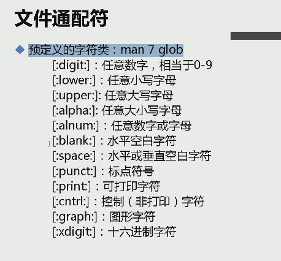

目录配置与文件目录管理
目录配置：可参考FHS标准
/bin:存放二进制文件，常用命令/boot：系统启动项文件,内核/dev:设备文件，硬盘等/etc：配置文件/home:用户家目录，每一个用户在/home下都有一个文件夹/lib：链接库文件/media：媒体自动挂载点，比如U盘，光盘等/mnt：媒体挂载点，手动挂载/opt：自定义软件安装处，默认安装处为/usr/local/root：超级用户目录/sbin：存放系统管理员所能执行的命令/tmp：临时文件/usr：类似于二层根目录/var:存放缓存，日志，数据库文件；该文件夹需要分配的空间较大，因此在磁盘分区时挂载在/var的分区要大一些。/proc：内存中的进程信息/sys：硬件相关信息
文件与目录管理
常用命令：
cd ~:切换到home;cd -:切换到上一次所在目录pwd：打印当前目录basename 和 dirname：分别获取当前路径的文件名和目录名touch xx:若xx不存在，则创建一个新文件xx。若xx存在，把xx的修改时间改为当前。> xx：若文件不存在，则创建一个空文件xx；若文件存在，则清空现有文件xx(可用于清空大文件)。mkdir 目录名 目录名 目录名 ...mkdir -p test/{a,b,c}/{d,e}:递归创建目录，分别在a,b,c三个目录下创建d,e两个目录。rmdir 目录名:只能删除空目录rm -rf目录:删除目录下所有东西（慎用rm）cp [选项] /PATH1/xx /PATH2/yy:若yy是一个目录，则把文件xx拷贝到yy下；若yy不是一个目录，则把文件xx拷贝到PATH2目录下并重命名为yy。cp不能直接拷贝目录，需要加选项参数，cp -rfp /目录1 /目录2 == cp -a /目录1 /目录2：将目录1及其所有子目录及文件拷贝到目录2。参数：-r即递归，-f即强制,-p同时复制属性信息。mv [选项] /PATH1/xx /PATH2/yy：若yy是一个目录，则把文件xx剪切到yy下；若yy不是一个目录，则把文件xx剪切到PATH2目录下并重命名为yy。例如mv xx yy:就是把xx重命名为yy。rename .log .logabc *：重命名，把所有文件名中的.log改为.logabc
关于执行文件路径的变量：执行程序必须在其所在目录下才能执行，亦可使用绝对路径调用，若要直接敲命令就可以执行，则需要设置PATH，把命令所在目录添加在PATH后面。
文件的三个时间属性:
atime:access timemtime:modify timectime:change time
文件名规则：
- 文件名最长255字节
- 蓝色–>目录；绿色–>可执行文件；红色–>压缩文件；浅蓝色–>链接文件；黄色–>设备文件；粉色–>套接字文件；棕色–>管道文件；灰色–>其他文件
文件通配符：
*：匹配0个或多个字符
?：匹配任意一个字符[1-5]：匹配字符1,2,3,4,5[a-c]：匹配字符a、A、b、B、c(没有C)。[A-C]：匹配A，b，B，c，C[^abcd]：匹配除abcd外的所有单个字母- 
文件内容查阅
cat 文件名:显示所有文件内容，适合查看小文件，参数-n显示行数。cat -n 文件名== nl 文件名。tac：从最后一行显示，倒数显示。more/less 文件名:按空格一屏一屏地显示，按回车一行一行地显示。同时在文档下方输入/字符串即可查找文档中的字符串。head -n 21 文件名:查看文件的前21行tail -n 21 文件名:查看文件的尾21行；参数-f,监测日志，实时监测日志的变化。od:查看非文本文档，比如二进制文件。
命令与文件的查询：
which -a 命令:在PATH路径中搜寻命令位置whereis 命令:返回命令路径及其帮助文档的路径；参数-b只返回命令路径。locate 字符串:在/var/lib/mlocate/mlocate.db中查询所有文件名中包含该字符串的文件并返回，该数据库每天定时更新，亦可通过updatedb更新。find [paths] [expression] [actions]:若不写paths则默认在当前目录下递归查找；
expression:
- 根据文件名检索
find 命令中的
-name选项可以根据文件名称进行检索（区分大小写）。如需要忽略文件名中的大小写，可以使用-iname选项。-name和-iname两个选项都支持 wildcards 。如：?可以表示任意一个单一的符号*可以表示任意数量（包括 0）的未知符号
find /usr -name '*.txt'查找 /usr 目录下所有文件名以.txt结尾的文件find /usr -name '????'查找 /usr 目录下所有文件名刚好为 4 个字符的文件有些时候，你需要在搜索时匹配某个文件或目录的完整路径，而不仅仅是匹配文件名。可以使用
-path或-ipath选项。如查找 /usr 下所有文件名以
.txt结尾的文件或目录，且该文件的父目录必须是src。可以使用以下命令：
find /usr -path '*/src/*.txt'- 根据文件类型检索
如果只想搜索得到文件或目录，即不想它们同时出现在结果中。可以使用
-type选项指定文件类型。-type选项最常用的参数如下：- f: 文件
- d: 目录
- l: 符号链接
find /usr -type d -name 'python*'检索 /usr 下所有文件名以python开头的目录- 检索空文件
find 命令支持
-empty选项用来检索为空的文件或目录。空文件即文件里没有任何内容，空目录即目录中没有任何文件或子目录。find ~ -type d -empty检索用户主目录下所有的空目录- 反义匹配
find 命令也允许用户对当前的匹配条件进行“反义”（类似于逻辑非操作）。
如需要检索 /usr 下所有文件名不以
.txt为后缀的文件。可以使用以下命令：
find /usr -type f ! -name '*.txt'也可以“翻转”任何其他的筛选条件，如：
find /usr -type f ! -empty检索 /usr 下所有内容不为空的文件- 根据文件的所属权检索
为了检索归属于特定用户的文件或目录，可以使用
-user选项。find / -type f -user starky检索根目录下所有属主为 starky 的文件类似于
-user选项，-group选项则可以根据文件或目录的属组进行检索。- 根据时间日期进行检索
有些时候，需要根据文件创建或修改的时间进行检索。
Linux 系统中，与文件相关联的时间参数有以下三种：
- 修改时间（Modification time）：最后一次文件内容有过更改的时间点
- 访问时间（Access time）：最后一次文件有被读取过的时间点
- 变更时间（Change time）：最后一次文件有被变更过的时间点（如内容被修改，或权限等 metadata 被修改）
与此对应的是 find 命令中的
-mtime，-atime和-ctime三个选项。这三个选项的使用遵循以下示例中的规则：
-mtime 2：该文件 2 天前被修改过-mtime -2：该文件 2 天以内被修改过-mtime +2：该文件距离上次修改已经超过 2 天时间
find /usr -type f -mtime 2检索 /usr 下两天前被修改过的文件如果觉得
-mtime等选项以天为单位时间有点长，还可以使用-mmin，-amin，-cmin三个选项：
find /usr -type f -mtime +50 -mtime -100检索 /usr 下 50 到 100 天之前修改过的文件
find /usr -type f -mtime 2 -amin 5检索 /usr 下两天前被修改过且 5 分钟前又读取过的文件- 根据文件大小检索
-size选项允许用户通过文件大小进行搜索（只适用于文件，目录没有大小……）。表示文件大小的单位由以下字符组成：
c：字节k：KbM：MbG：Gb
另外，还可以使用
+或-符号表示大于或小于当前条件。find / -size +1G检索文件大小高于 1 GB 的文件- 根据文件权限检索
find 命令可以使用
-perm选项以文件权限为依据进行搜索。使用符号形式
如需要检索 /usr 目录下权限为
rwxr-xr-x的文件，可以使用以下命令：
find /usr -perm u=rwx,g=rx,o=rx搜索 /usr 目录下所有权限为
r-xr-xr-x（即系统中的所有用户都只有读写权限）的文件和目录，可以使用以下命令：
find /usr -perm a=rx很多时候，我们只想匹配文件权限的一个子集。比如，检索可以直接被任何用户执行的文件，即只关心文件的执行权限，而不用管其读写权限是什么。
上述的需求可以通过以下命令实现：
find / -type f -perm /a=x
其中a=x前面的/符号即用来表示只匹配权限的某个子集（执行权限），而不用关心其他权限的具体设置。使用数字形式
-perm选项也支持数字形式的文件权限标记。find /usr -perm 644搜索 /usr 目录下权限为 644（即rwxr-xr-x）的文件- 限制遍历的层数
find 命令默认是以递归的方式检索项目的，这有时候会导致得到的结果数量非常巨大。可以使用
-maxdepth限制 find 命令递归的层数。find / -maxdepth 3搜索时向下递归的层数最大为 3- 逻辑组合
在之前的例子中有出现多个搜索条件的组合以及对某个搜索条件的反转。
实际上 find 命令支持 “and” 和 “or” 两种逻辑运算，对应的命令选项分别是-a和-o。通过这两个选项可以对搜索条件进行更复杂的组合。此外还可以使用小括号对搜索条件进行分组。注意
find命令中的小括号常需要用单引号包裹起来。因小括号在 Shell 中有特殊的含义。如检索 /usr 下文件名以
python开头且类型为目录的文件
find /usr -type d -name 'python*'该命令等同于：
find /usr -type d -a -name 'python*'更复杂的组合形式如：
find / '(' -mmin -5 -o -mtime +50 ')' -a -type f对搜索结果执行actions：
- 删除文件
-delete选项可以用来删除搜索到的文件和目录。如删除 home 目录下所有的空目录：
find ~ -type d -empty -delete- 执行自定义命令
-exec选项可以对搜索到的结果执行特定的命令。如需要将 home 目录下所有的 MP3 音频文件复制到移动存储设备（假设路径是
/media/MyDrive），可使用下面的命令：
find ~ -type f -name '*.mp3' -exec cp {} /media/MyDrive ';'其中的大括号（
{}）作为检索到的文件的 占位符 ，而分号（;）作为命令结束的标志。因为分号是 Shell 中有特殊含义的符号，所以需要使用单引号括起来。
每当 find 命令检索到一个符合条件的文件，会使用其完整路径取代命令中的{}，然后执行-exec后面的命令一次。另一个很重要的用法是，在多个文件中检索某个指定的字符串。
如在用户主目录下的所有文件中检索字符串hello，可以使用如下命令：
find ~ -type f -exec grep -l hello {} ';'-exec 选项中的 + 符号
创建 Gzip 格式的压缩文件的命令为：
tar -czvf filename.tar.gz现在假设需要将用户主目录下所有的 MP3 文件添加到压缩包
music.tar.gz中，直观的感觉是，其命令应为如下形式：
find ~ -type f -name '*.mp3' -exec tar -czvf music.tar.gz {} ';'实际情况是，这样得到的
music.tar.gz其实只包含一个 MP3 文件。
原因是 find 命令每次发现一个音频文件，都会再执行一次-exec选项后面的压缩命令。导致先前生成的压缩包被覆盖。可以先让 find 命令检索出所有符合条件的音频文件，再将得到的文件列表传递给后面的压缩命令。完整的命令如下：
find ~ -type f -name '*.mp3' -exec tar -czvf music.tar.gz {} +显示文件信息
如果想浏览搜索到的文件（目录）的详细信息（如权限和大小等），可以直接使用
-ls选项。find / -type file -size +1G -ls浏览所有 1G 以上大小的文件的详细信息